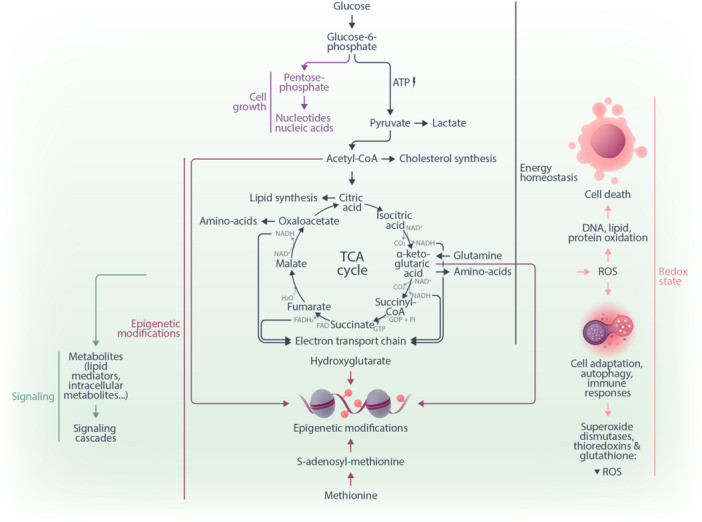
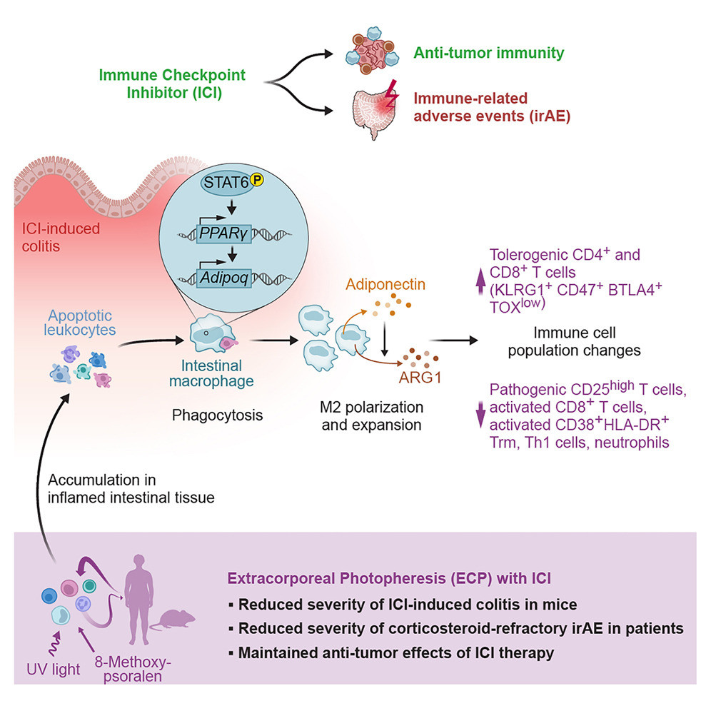
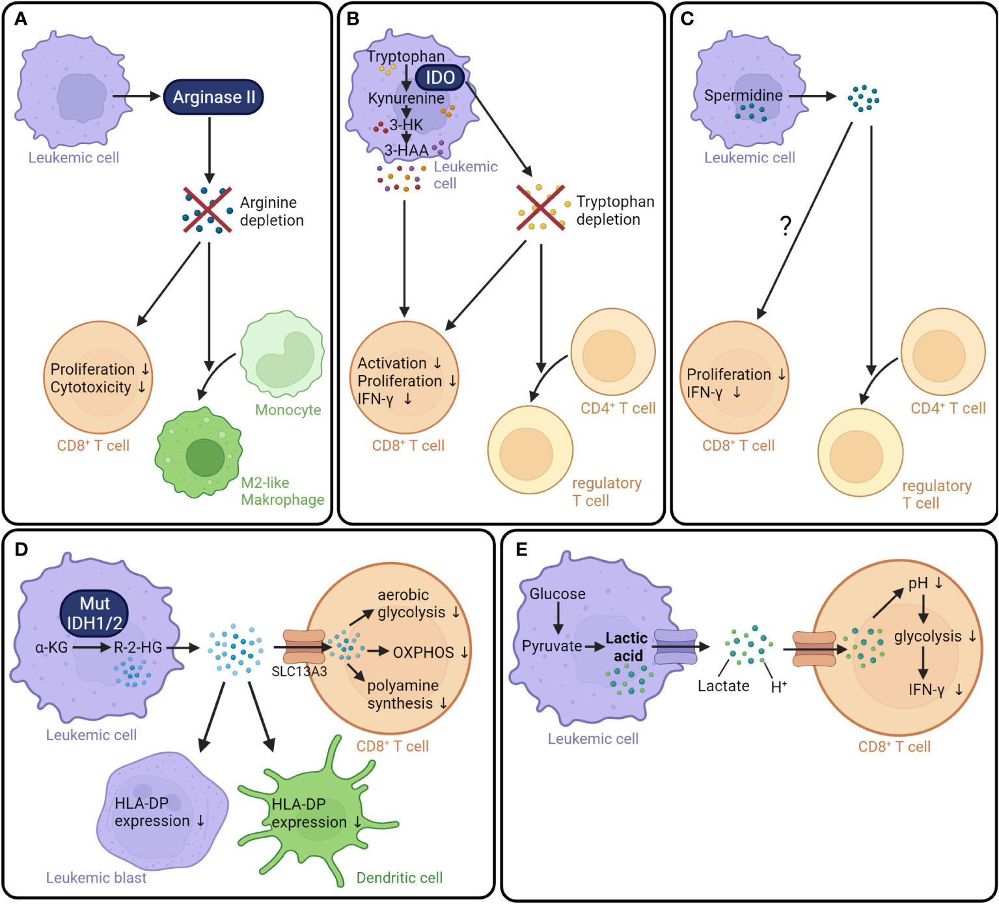
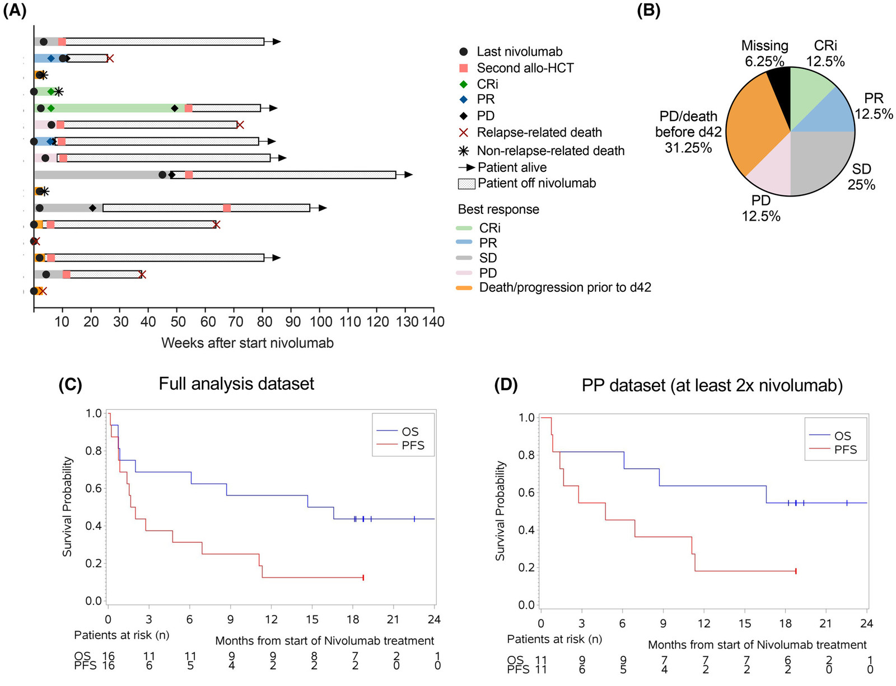
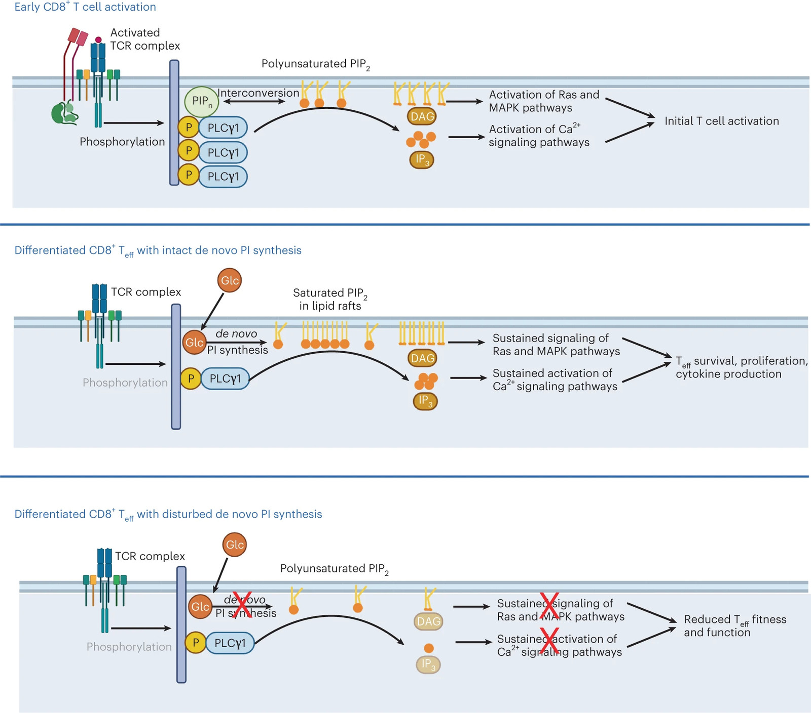
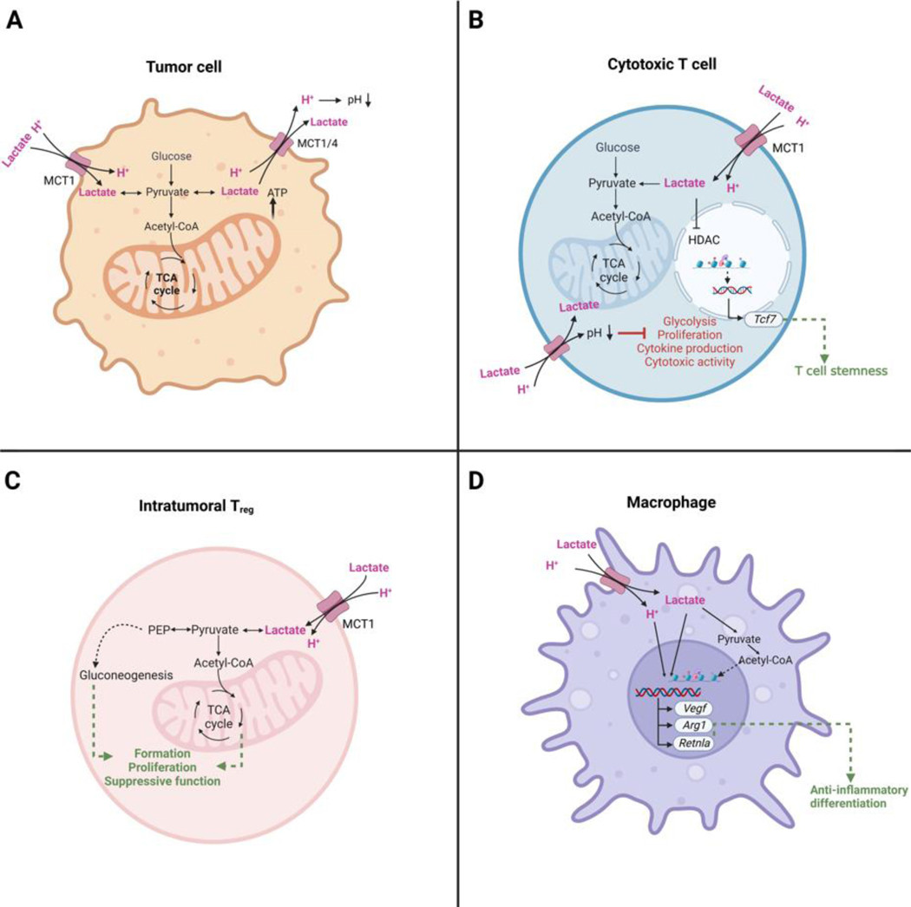
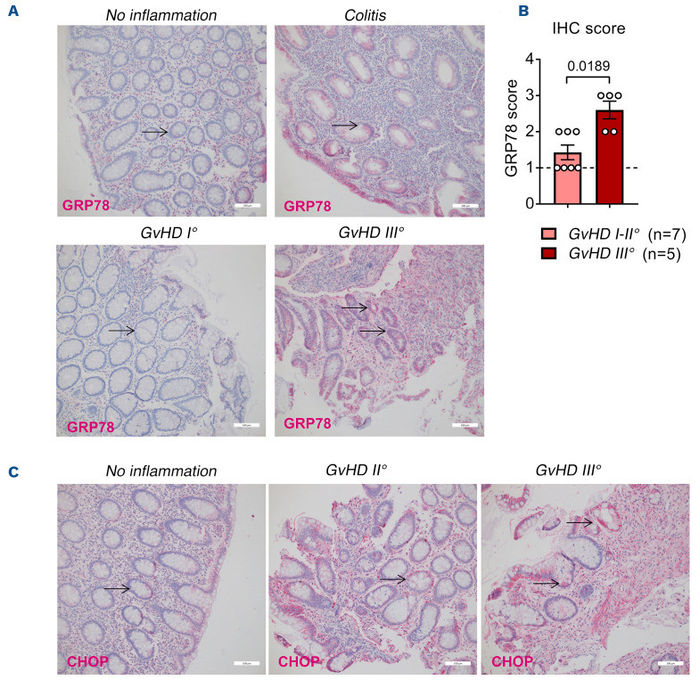
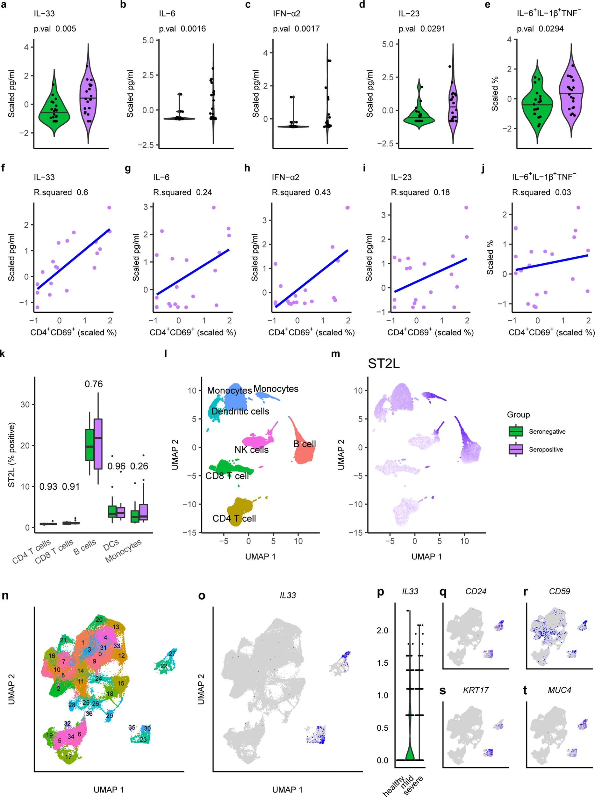
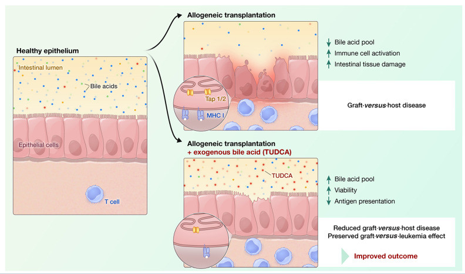
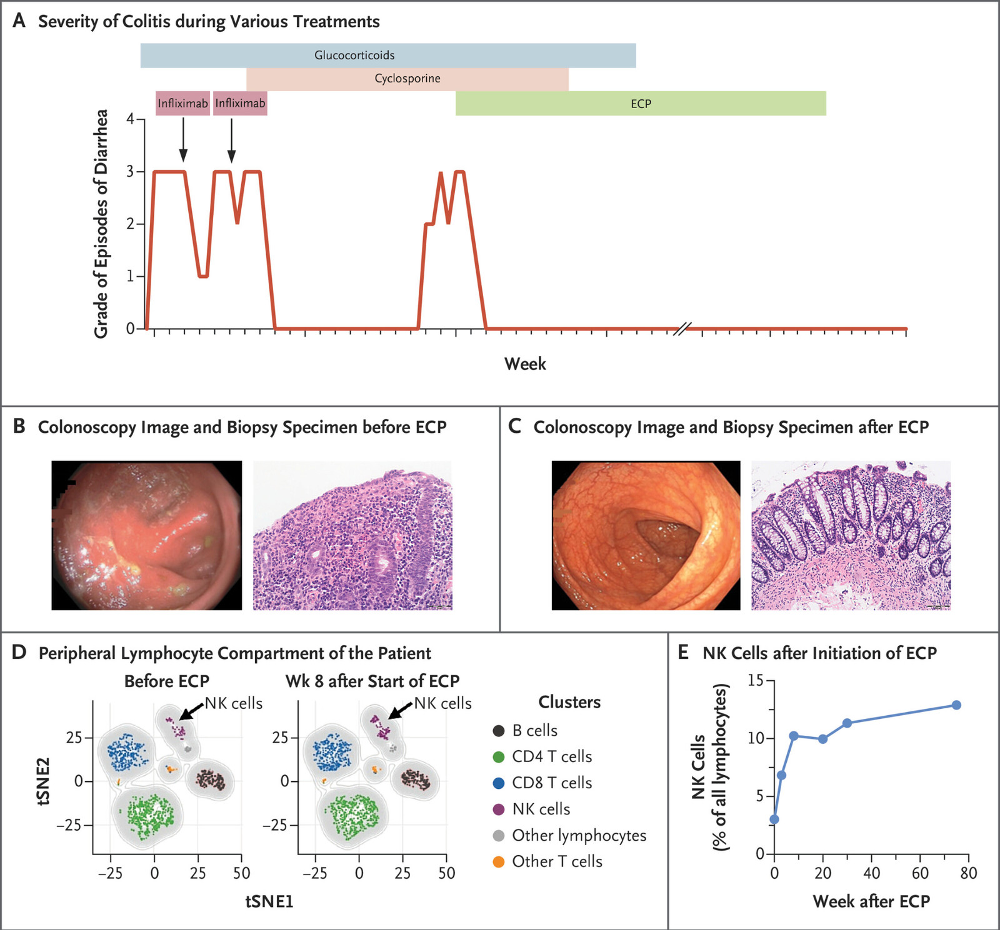

The term metabolism refers to the multi-faceted biochemical reactions within a cell or an organism that occur to maintain energy homeostasis, cell growth, and oxidative balance. Cells possess a high metabolic plasticity, allowing them to adapt to the dynamic requirements of their functional state and environment. Deregulated cellular metabolism is a hallmark of many diseases, including benign and malignant hematological conditions. In the last decade, multiple technological innovations in the metabolism field have made in-depth metabolic analysis broadly applicable. Such studies are shedding new light on normal and malignant hematopoiesis and open avenues to a better understanding of the biology of hematological diseases. In this review, we will first give a brief overview of central metabolic processes.
Furthermore, we discuss the most commonly used methods to study metabolism. We begin by elaborating on the use of next-generation sequencing to detect metabolism-related genomic mutations and study transcriptional signatures. Furthermore, we discuss methods for measuring protein expression, such as mass spectrometry (MS), flow cytometry, and cytometry time-of-flight. Next, we describe the use of nuclear magnetic resonance spectroscopy, MS, and flow cytometry for metabolite quantification. Finally, we highlight functional assays to probe metabolic pathways in real-time. We illustrate how these technologies and their combination have advanced our understanding of the role of metabolism. Our goal is to provide hematologists with a comprehensive guide to modern techniques in metabolism research, their benefits and disadvantages, and how they guide our understanding of disease and potentially future personalized therapy decisions

Immune-related adverse events (irAEs) in cancer patients receiving immune checkpoint inhibitors (ICIs) cause morbidity and necessitate cessation of treatment. Comparing irAE treatments, we find that anti-tumor immunity is preserved in mice after extracorporeal photopheresis (ECP) but reduced with glucocorticosteroids, TNFα blockade, and α4β7-integrin inhibition. Local adiponectin production elicits a tissue-specific effect by reducing pro-inflammatory T cell frequencies in the colon while sparing tumor-specific T cell development. A prospective phase-1b/2 trial (EudraCT-No.2021-002073-26) with 14 patients reveals low ECP-related toxicity. Overall response rate for all irAEs is 92% (95% confidence interval [CI]: 63.97%-99.81%); colitis-specific complete remission rate is 100% (95% CI: 63.06%-100%). Glucocorticosteroid dosages could be reduced for all patients after ECP therapy. The ECP-adiponectin axis reduces intestinal tissue-resident memory T cell activation and CD4+IFN-γ+ T cells in patients with ICI-induced colitis without evidence of loss of anti-tumor immunity. In conclusion, we identify adiponectin as an immunomodulatory molecule that controls ICI-induced irAEs without blocking anti- tumor immunity.
https://www.sciencedirect.com/science/article/pii/S1535610825000224

Allogeneic hematopoietic cell transplantation (allo-HCT) is frequently performed to cure hematological malignancies, such as acute myeloid leukemia (AML), through the graft-versus-leukemia (GVL) effect. In this immunological process, donor immune cells eliminate residual cancer cells in the patient and exert tumor control through immunosurveillance. However, GVL failure and subsequent leukemia relapse are frequent and associated with a dismal prognosis. A better understanding of the mechanisms underlying AML immune evasion is essential for developing novel therapeutic strategies to boost the GVL effect. Cellular metabolism has emerged as an essential regulator of survival and cell fate for both cancer and immune cells. Leukemia and T cells utilize specific metabolic programs, including the orchestrated use of glucose, amino acids, and fatty acids, to support their growth and function. Besides regulating cell-intrinsic processes, metabolism shapes the extracellular environment and plays an important role in cell-cell communication.
This review focuses on recent advances in the understanding of how metabolism might affect the anti- leukemia immune response. First, we provide a general overview of the mechanisms of immune escape after allo-HCT and an introduction to leukemia and T cell metabolism. Further, we discuss how leukemia and myeloid cell metabolism contribute to an altered microenvironment that impairs T cell function. Next, we review the literature linking metabolic processes in AML cells with their inhibitory checkpoint ligand expression. Finally, we focus on recent findings concerning the role of systemic metabolism in sustained GVL efficacy. While the majority of evidence in the field still stems from basic and preclinical studies, we discuss translational findings and propose further avenues for bridging the gap between bench and bedside.
https://www.frontiersin.org/journals/immunology/articles/10.3389/fimmu.2024.1347492/full

Acute myeloid leukaemia (AML) relapse after allogeneic haematopoietic cell transplantation (allo-HCT) is often driven by immune-related mechanisms and associated with poor prognosis. Immune checkpoint inhibitors combined with hypomethylating agents (HMA) may restore or enhance the graft-versus-leukaemia effect. Still, data about using this combination regimen after allo-HCT are limited. We conducted a prospective, phase II, open-label, single-arm study in which we treated patients with haematological AML relapse after allo-HCT with HMA plus the anti-PD-1 antibody nivolumab. The response was correlated with DNA-, RNA- and protein-based single-cell technology assessments to identify biomarkers associated with therapeutic efficacy. Sixteen patients received a median number of 2 (range 1-7) nivolumab applications. The overall response rate (CR/PR) at day 42 was 25%, and another 25% of the patients achieved stable disease.
The median overall survival was 15.6 months. High-parametric cytometry documented a higher frequency of activated (ICOS+ , HLA-DR+ ), low senescence (KLRG1- , CD57- ) CD8+ effector T cells in responders. We confirmed these findings in a preclinical model. Single-cell transcriptomics revealed a pro-inflammatory rewiring of the expression profile of T and myeloid cells in responders. In summary, the study indicates that the post-allo-HCT HMA/nivolumab combination induces anti-AML immune responses in selected patients and could be considered as a bridging approach to a second allo-HCT. Trial-registration: EudraCT-No. 2017-002194-18.

How lipidome changes support CD8+ effector T (Teff) cell differentiation is not well understood. Here we show that, although naive T cells are rich in polyunsaturated phosphoinositides (PIPn with 3-4 double bonds), Teff cells have unique PIPn marked by saturated fatty acyl chains (0-2 double bonds). PIPn are precursors for second messengers. Polyunsaturated phosphatidylinositol bisphosphate (PIP2) exclusively supported signaling immediately upon T cell antigen receptor activation. In late Teff cells, activity of phospholipase C-γ1, the enzyme that cleaves PIP2 into downstream mediators, waned, and saturated PIPn became essential for sustained signaling. Saturated PIP was more rapidly converted to PIP2 with subsequent recruitment of phospholipase C-γ1, and loss of saturated PIPn impaired Teff cell fitness and function, even in cells with abundant polyunsaturated PIPn. Glucose was the substrate for de novo PIPn synthesis, and was rapidly utilized for saturated PIP2 generation. Thus, separate PIPn pools with distinct acyl chain compositions and metabolic dependencies drive important signaling events to initiate and then sustain effector function during CD8+ T cell differentiation.

Lactic acid production has been regarded as a mechanism by which malignant cells escape immunosurveillance. Recent technological advances in mass spectrometry and the use of cell culture media with a physiological nutrient composition have shed new light on the role of lactic acid and its conjugate lactate in the tumor microenvironment. Here, we review novel work identifying lactate as a physiological carbon source for mammalian tumors and immune cells. We highlight evidence that its use as a substrate is distinct from the immunosuppressive acidification of the extracellular milieu by lactic acid protons. Together, data suggest that neutralizing the effects of intratumoral acidity while maintaining physiological lactate metabolism in cytotoxic CD8+ T cells should be pursued to boost anti-tumor immunity.
https://www.sciencedirect.com/science/article/pii/S1471490622002137

Acute graft-versus-host disease (GvHD) is a life-threatening complication of allogeneic hematopoietic cell transplantation (allo-HCT), a potentially curative treatment for leukemia. Endoplasmic reticulum (ER) stress occurs when the protein folding capacity of the ER is oversaturated. How ER stress modulates tissue homeostasis in the context of alloimmunity is not well understood. We show that ER stress contributes to intestinal tissue injury during GvHD and can be targeted pharmacologically. We observed high levels of ER stress upon GvHD onset in a murine allo- HCT model and in human biopsies. These levels correlated with GvHD severity, underscoring a novel therapeutic potential. Elevated ER stress resulted in increased cell death of intestinal organoids. In a conditional knockout model, deletion of the ER stress regulator transcription factor Xbp1 in intestinal epithelial cells induced a general ER stress signaling disruption and aggravated GvHD lethality. This phenotype was mediated by changes in the production of antimicrobial peptides and the microbiome composition as well as activation of pro-apoptotic signaling. Inhibition of inositol-requiring enzyme 1α (IRE1α), the most conserved signaling branch in ER stress, reduced GvHD development in mice.
IRE1α blockade by the small molecule inhibitor 4m8c improved intestinal cell viability, without impairing hematopoietic regeneration and T-cell activity against tumor cells. Our findings in patient samples and mice indicate that excessive ER stress propagates tissue injury during GvHD. Reducing ER stress could improve the outcome of patients suffering from GvHD.

Our understanding of severe acute respiratory syndrome coronavirus 2 (SARS-CoV-2) is still developing. We perform an observational study to investigate seroprevalence and immune responses in subjects professionally exposed to SARS-CoV-2 and their family members (155 individuals; ages 5-79 years). Seropositivity for SARS-CoV-2 Spike glycoprotein aligns with PCR results that confirm the previous infection. Anti-Spike IgG/IgM titers remain high 60 days post-infection and do not strongly associate with symptoms, except for fever. We analyze PBMCs from a subset of seropositive and seronegative adults. TLR7 agonist-activation reveals an increased population of IL-6+TNF-IL-1β+ monocytes, while SARS-CoV-2 peptide stimulation elicits IL-33, IL-6, IFNa2, and IL-23 expression in seropositive individuals. IL-33 correlates with CD4+ T cell activation in PBMCs from convalescent subjects and is likely due to T cell-mediated effects on IL-33-producing cells. IL-33 is associated with pulmonary infection and chronic diseases like asthma and COPD, but its role in COVID-19 is unknown. Analysis of published scRNAseq data of bronchoalveolar lavage fluid (BALF) from patients with mild to severe COVID-19 reveals a population of IL-33-producing cells that increases with the disease. Together these findings show that IL-33 production is linked to SARS-CoV-2 infection and warrant further investigation of IL-33 in COVID-19 pathogenesis and immunity.

Acute graft-versus-host disease causes significant mortality in patients undergoing allogeneic hematopoietic cell transplantation. Immunosuppressive treatment for graft-versus-host disease can impair the beneficial graft-versus-leukemia effect and facilitate malignancy relapse. Therefore, novel approaches that protect and regenerate injured tissues without impeding the donor immune system are needed. Bile acids regulate multiple cellular processes and are in close contact with the intestinal epithelium, a major target of acute graft-versus-host disease. Here, we found that the bile acid pool is reduced following graft-versus-host disease induction in a preclinical model.
We evaluated the efficacy of bile acids to protect the intestinal epithelium without reducing anti-tumor immunity. We observed that application of bile acids decreased cytokine-induced cell death in intestinal organoids and cell lines. Systemic prophylactic administration of tauroursodeoxycholic acid, the most potent compound in our in vitro studies, reduced graft-versus-host disease severity in three different murine transplantation models. This effect was mediated by decreased activity of the antigen presentation machinery and subsequent prevention of apoptosis of the intestinal epithelium. Moreover, bile acid administration did not alter the bacterial composition in the intestine suggesting that its effects are cell-specific and independent of the microbiome. Treatment of human and murine leukemic cell lines with tauroursodeoxycholic acid did not interfere with the expression of antigen presentation-related molecules. Systemic T cell expansion and especially their cytotoxic capacity against leukemic cells remained intact. This study establishes a role for bile acids in the prevention of acute graft-versus-host disease without impairing the graft-versus-leukemia effect. In particular, we provide a scientific rationale for the systematic use of tauroursodeoxycholic acid in patients undergoing allogeneic hematopoietic cell transplantation.

Immune checkpoint inhibitors targeting CTLA-4 and PD-1 are effective in advanced melanoma but frequently cause severe immune-related adverse events (irAEs), including autoimmune colitis that may resist standard immunosuppressive therapy. We report the case of a 29-year-old patient with metastatic melanoma who developed refractory colitis following combined ipilimumab–nivolumab treatment. Despite prolonged glucocorticoids, infliximab, and cyclosporine, no durable remission was achieved. Initiation of extracorporeal photopheresis (ECP) resulted in complete and sustained resolution of colitis, accompanied by expansion of immunoregulatory natural killer (NK) cells and reduced systemic proinflammatory cytokine levels. Functional assays confirmed a protective role of patient-derived NK cells in a murine irAE model. This case highlights ECP as a potential therapeutic option for immune-checkpoint–inhibitor– induced colitis resistant to conventional immunosuppression.